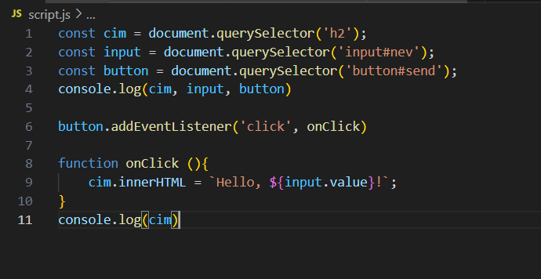

Egy rövid bevezető a html-ről
Ez volt az utolsó anyag idén. Tavaly már egy kicsit tanultam html programozást, ezért nem voltak nehézségeim. Igaz itt kicsit máshogy vettük, de hozzászoktam. Szerintem a html-t nnem nehze használni, és egy kevés munkával egész jól kinézhető weboldalakat tudunk kapni. Talán a stílus készítése a kedvenc részem benne. Igaz néha eléggénehéz jól méretezni a dolgokat, de valamit mindig csinálok. A téma vége felé tanultun egy kevés JavaScriptet. Ez még annyira nem megy jól, de remélhetőleg előbb-utóbb ez is úgy fog menni mint a többi téme.
Stílusok gyakorlása:
Ahogy már korábban említettem a stílust az esetek nagyrészében szerettem csinálni. A következő kód a Panda oldal stílusa:
p {
color: darkgreen;
background-color: rgb(212, 212, 149);
padding:15px 30px;
margin: 30px;
border-radius: 5px;
border: 3px dashed darkgreen;
/* border: 5px dotted darkgreen;
border: 5px dashed darkgreen;
border: 5px solid darkgreen; */
font-size: 20px;
font-family:Arial,Helvetica,sans-serif;
}
img {
width: 100%;
}
body {
width: 70%;
margin: 0 auto;
background-color: rgb(48, 82, 48);
}
Így néz ki a stílus a weboldalon, szerintem eléggé jól sikerült.
JavaScript:
Ezt még nem nagyon értem, de amikor majd fogok tudni ilyet magamtól csinálni, remélhetőleg soka fog segíteni a weboldal élvezhetőségében.
